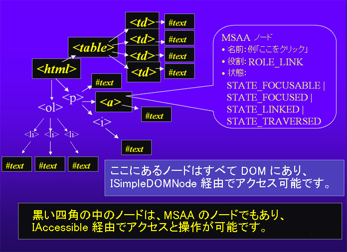

Windows アクセシビリティベンダー向け Gecko 情報
この FAQ は Windows のスクリーンリーダ、音声検出パッケージ、拡大鏡ソフトウェアの製作者が、どうすれば Gecko ベースのソフトウェアをサポートできるかについて説明しています。これらの製品に対する私たちのサポートのベースとなるのは、MSAA (Microsoft Active Accessibility)、外部の readonly DOM サポート、およびキーボード API/ ユーザインターフェイスです。
Firefox とその他の Gecko ベースの製品すべてにとって、この文書は 現在まだ公式リリースになっていない Firefox の最新のビルドにのみ適用されます【訳注: 05/12/20現在 Firefox 1.5が公式リリースされています】。これらの機能をサポートする Firefox の現行のビルドを参照してください。
目次
- 定義
- Gecko レイアウトエンジンに基づく Windows アプリケーション
- コンテンツウィンドウの見つけ方とドキュメントの読み込み方法
- MSAA サポート: IAccessible メソッド
- MSAA サポート: イベント追跡と一意の ID
- サポートされない MSAA の機能
- Internet Explorer との意図的な違い
- サポートされる MSAA Roles の一覧表
- IEnumVARIANT によるクライアントエンドの性能向上
- メモリリークの回避
- DOM サポートの追加
- キーボード UI 情報
- HTML を超えて: 他の種類のウェブコンテンツ -- DHTML、MathML、SVG、XForms、XUL
- 質問あるいはコメント?
定義
この文書を理解する上で必要になる基本的定義を示します:
- Gecko : Firefox、Thunderbird、Nvu、Mozilla Seamonkey、その他アプリケーション用のレンダリングエンジン。Gecko は Mozilla があらゆる種類のウェブコンテンツを表示するために使う内部エンジンです。HTML、XHTML,Cascading Style Sheets (CSS)、Document Object Model (DOM) をサポートします。
- MSAA : Microsoft Active Accessibility は Microsoft によって作られた API です。ソフトウエアーパッケージが MSAA をサポートしていれば、ユーザーインターフェイスの内部で発生している事をアクセシビリティの補助機能が追跡できます。もし MSAA を真剣に理解しようとするならば、MSDN で資料を読み、MSAA SDK 1.3 によって提供されるアプリケーションとコードを試してみる必要があります。（MSAA SDK 2.0 はテストツールのソースコードを備えていないので、 SDK 1.3 を推奨します。他の違いは重要ではありません。）
- DOM : Document Object Model。これは、ウェブコンテンツがどのようにして JavaScript や他の言語へ公開されるかについての W3C の仕様です。DOM はコンテンツ、スタイル、イベントをカバーします。Gecko のプロセス内部では、コードは無条件に DOM API にアクセスします。しかし、全 DOM を外部ソフトウェアパッケージに公開することはあまりに大掛かりになります。ひとつには、Firefox において DOM へ変更を加えることは、メインスレッドで行われることになるからです。私たちは、アクセシビリティ補助機器ベンダーに必要とされる、 DOM の readonly メソッドのサブセットを選り抜きました。フォーカスの変更などのイベントは DOM イベントではなく、MSAA イベントによって追跡される必要があります。
- XUL: ユーザインターフェイスを開発するのに Firefox や Mozilla によって使われる XML をベースとする言語。強力なアプリケーションを作成するのに CSS や JavaScript と組み合わせられる点が、HTML と似ている。HTML よりデスクトップ型のウィジェットをより多く含み、テキストフロー(text-flow)ではなく、ボックスレイアウトの方式を採用します。
- 役割、状態、イベント: これらをあまりご存知でなければ、MSDN で MSAA の文書を読んでください。通常余分な言葉を省くことで、短縮形にします。例えば、EVENT_SYSTEM_ALERT とすべて言わずに、EVENT_ALERT とすることができます。
MSAA ツリー対 DOM ツリー：その関係は？

MSAA ツリーと DOM ツリーでは、MSAA ツリーは DOM ツリーのサブセットではあるものの、平行的構造を備えています。QueryService() はインターフェイス (IAccessible、ISimpleDOMDocument、ISimpleDOMNode、ISimpleDOMText) を切り替えるのに使われます。DOM ノードに対応する MSAA ノードが存在しない(また反対に MSAA ノードに対応する DOM ノードが存在しない)ならば、QueryService() は null を返します。
フォーカス可能なものは何であれ、またドキュメントの構造についての重要な情報を伝えるものはすべて、IAccessibles の MSAA ツリーで表示されます。
Gecko レイアウトエンジンに基づく Windows アプリケーション
Gecko は Mozilla、Netscape、他の新しいブラウザが使うレンダリングエンジンです。Gecko は HTML だけでなく様々なコンテンツを表示可能で、Cascading Style Sheets、JavaScript、W3C DOM などのウェブの重要な標準をサポートします。Gecko はまたユーザーのキー入力やマウスクリックについても扱います。Gecko に基づく全てのアプリケーションにおいてアクセシビリティをサポートするために、私たちは中核の構造体である Gecko にアクセシビリティを追加しているところです。
（MSAA をサポートする）埋め込まれたクライアント
埋め込まれたクライアントは、Gecko をコンテンツウィンドウでのみ、また今のところ HTML と共用 XML に対してのみ使用します。それらクライアントは通常、ユーザインターフェイス--クライアントのコンテンツウィンドウの外の領域、およびコンテンツメニュ--に対して、標準の Windows コントロールを使用します。
MFCEMBEDテストクライアント: これは非常に簡単なパッケージであり、あなたの製品や Gecko 表示エンジンによって、基本的な HTML アクセシビリティをテストするのに最適です。コピーのご請求は Aaron Leventhal - aaronleventhal@ m o o n s e t . net へご連絡下さい。- Kmeleon: さらに進化しているウェブブラウザ
（MSAA をサポートする）XUL ベースのクライアント
HTML コンテンツだけでなく、メニュ、ダイアログボックス、XUL(eXtensible User-interface Language) 【訳注: 正しくは(XML User Interface Language)】と呼ばれる XML 言語を使った全ユーザインターフェイスに対して、XUL ベースのクライアントは Gecko のアーキテクチャーを全面的に使用します。ユーザインターフェイスは、Windows の標準コントロールを含みません。メニュさえも含みません。これは、サポートされるすべてのプラットフォームにおいて共通のルックアンドフィールを確保するためであり、様々なスキン（外観）を有効にするためでもあります。
- Firefox (バージョン 1.1 アルファ・ビルドかそれ以降のものを使ってください)
- Thunderbird (バージョン 1.1 アルファ・ビルドかそれ以降のものを使ってください)
- Mozilla Seamonkey (バージョン 1.8 アルファ・ビルドかそれ以降のものを使ってください)
コンテンツウィンドウの見つけ方と、ドキュメントの読み込み方法
スクリーンリーダーはその処理中に、現在のドキュメントをバッファに取り込むために、コンテンツウィンドウを見つけ MSAA ツリーの取り込みを開始するポイントを知る必要があります。コンテンツウィンドウはかならず、MozillaContentWindowClass というクラスを備えています。
Gecko は、全部で以下に示すウィンドウクラスをサポートします:
- MozillaUIWindowClass - ウィンドウ階層の基になるルート UI ウィンドウ
- MozillaContentWindowClass -- ルートドキュメントウィンドウ
- MozillaContentFrameWindowClass - <frame> や <iframe> 要素によって作られるサブドキュメントのルート
- MozillaHiddenWindowClass - これらのウィンドウを無視してください。他のウィンドウを管理する支援のために使われます。
- MozillaWindowClass - 汎用的代用ウィンドウ、多目的
上記のウィンドウのいずれかがフォーカスを受け取ったなら、始めにその役割を調べてください。その時、役割が ROLE_PANE や ROLE_DOCUMENT ならば、スクリーンリーダのデフォルトモードのドキュメントとして処理されるはずです。役割が ROLE_APPLICATION や ROLE_DIALOG であれば、フォーカスの追跡モードにしてください。ドキュメントの解析は必要ありません。さらに、ROLE_ALERT であれば、スクリーンリーダはウィンドウをメッセージボックスとして扱うはずです。つまり、全コンテンツを読むことになります。これらの役割は、著者にドキュメントやコンテナの型を指定することを可能にする新しい DHTML アクセシビリティテクノロジーのお陰で、コンテンツに応じて生じます。
ドキュメントがあると一度分かれば、ウィンドウの上層へ、MozillaContentWindowClass か MozillaUIWindowClass を見つけるまで、祖先への連鎖をたどってください。もしそれが、コンテンツウィンドウであれば、AccessibleObjectFromWindow() を使ってコンテンツに対する ルート IAccessible を取得し、そこからツリーの移動を開始できます。
Gecko はまた、ROLE_DOCUMENT アクセシビリティで 2 つの EVENT_STATE_CHANGE を起動することによって、新しいウィンドウを読み込むべき時期の決定が容易になります。最初の状態の変更はドキュメントのペインが今読み込中であることを示します。2 番目の状態の変更はドキュメントのペインが読み込みを完了したことを示します。イベントを処理するとき、get_accState() を使って STATE_BUSY フラグを調べてください。ドキュメントが読み込みを完了すると、稼動中を示すフラグはクリアーされます。
MSAA サポート: IAccessible メソッド
Gecko と一緒に MSAA を使用するために、
MSAA SDK を備えたツールやドキュメントが必要になります。AccessibleObjectFromWindow() メソッドで、トップレベルのウィンドウに対応するルート IAccessible が取得できます。このルート IAccessible を保持して IAccessible の全ツリーを移動するのに使用して下さい。
サポートしている IAccessible のメソッド:
- get_accParent
- get_accChildCount
- get_accChild
- get_accName
- get_accValue
- get_accDescription
- get_accRole
- get_accState
- get_accFocus
- get_accDefaultAction
- accLocation
- accSelect
- accHitTest
- accDoDefaultAction
- accNavigate
- get_accKeyboardShortcut
MSAA サポート: IAccessible イベントおよび一意の ID
サポートされる MSAA イベントは何か？
- EVENT_FOCUS はあらゆる種類のフォーカス可能なオブジェクト上でフォーカスの変更のために起動されます。
- EVENT_STATECHANGE はチェックボックス、ラジオボタン、テキスト領域、コンボボックス、リストボックスにおいて使用されます。またそれは、STATE_BUSY フラグが新しいコンテンツを読み込み中の状態からいつ変更になるかを示すのに、ルートペインオブジェクトで使用されます。
- EVENT_SCROLLINGEND は一行だけであっても、ドキュメントがいつスクロールしたかを示すのに使われます。Gecko はスクロールが完了する時、過剰にイベントを起動せずに、このイベントを起動します。
- EVENT_SCROLLINGSTART はユーザがページ内で名前付きのアンカーへ移動した時に起動されます。イベントは移動先のドキュメント側の最初のアクセシビリティのオブジェクトで起動されます。
- EVENT_MENUPOPUPSTART と EVENT_MENUPOPUPEND は XUL メニュバーが開かれた時や閉じられた時に起動されます。
- EVENT_MENUSTART と EVENT_MENUEND は XUL メニュバーが有効になった時や無効になった時に起動されます。
- EVENT_VALUECHANGE は get_accValue() が変更することができるスライダー、プログレスメータ、他のオブジェクトに対して起動されます。
- EVENT_SHOW、 EVENT_HIDE、EVENT_LOCATIONCHANGE はキャレットオブジェクトに対して起動されます。
- EVENT_REORDER は内部に子を持つオブジェクトが、その子が変化する時は必ず親オブジェクト上で起動されます。EVENT_SHOW と EVENT_HIDE は、外観が変わった子に対して、reorder イベントと一緒に起動されることもあります。見せたり隠したりするイベント (show and hide events) は、IAccessibles の新しいサブツリーが外観を変更する時、一番上の IAccessible 以外は 、すべての IAccessible で起動されるわけでありません。例外はプログレスメータであり、それが表示されたり、隠されたりする時、EVENT_SHOW や EVENT_HIDE イベントをかならず起動するようになっています。
- EVENT_ALERT は ROLE_ALERT のオブジェクトが出現したり変わったりする時に起動されます。こうして、スクリーンリーダが警告内容を読み上げるように指示を出します（その時オブジェクトは、読み上げられる下位層を備えた、コンテナかもしれません）。
- EVENT_SELECTION は 選択項目がひとつだけのコンテナが備える子において、EVENT_FOCUS と一緒に起動されます。この場合、選択とフォーカスが一緒に移動します。
- EVENT_SELECTIONWITHIN は複数項目を選択するコンテナで、現在の選択が内部で変わる時に起動されます。さらに、選択が変更された子において、EVENT_SELECTIONADD と EVENT_SELECTIONREMOVE が起動されます。
独自開発のオフスクリーンモデルで、イベントの発生場所を追跡する方法
普通、子の ID が添え字 0 から始まるのはイベントを表すのに実用的でありません。問題点は、MSAA が採用する ID システムは、ウィンドウでオブジェクトが深いツリー構造となっている場合うまく機能しないことです。ドキュメントのすべてのノードに 0 から始まる番号をふることは実用的でありません。というのは、ノードが挿入されたり削除される都度、番号付けをやり直すのはプログラム上高価につくからです。そこで、イベントから戻される Firefox の子 ID は関連する内部 DOM モードのポインター値を使うアルゴリズムに基づくようになっています。イベントに対して計算されるこの子 ID は必ず負の数であり、イベントを起動する IAccessible にとって一意です。
これらのイベントから返される負の数である子 ID は AccessibleObjectFromEvent() によって使用されるか、get_accChild() のような、VARIANT を採るすべての IAccessible のメソッドによってウィンドウのルート accessible で使われます。
スクリーンリーダは、普通全ドキュメントに匹敵するデータをキャッシュするので、既知のオブジェクトに正しく戻ることを可能にする子 ID を受け取るのは、スクリーンリーダに大変役立ちます。この時、内部モデルでキャッシュされる、すべての IAccessible の一意の ID を返す ISimpleDOMNode::get_nodeInfo() によって、この技術のサポートが提供されます。イベントが受け取られた時、全ドキュメントが保存され、そのまま維持されているなら、負の数の子 ID は、これらのキャッシュされた一意の ID の中のひとつと合致します。内部キャッシュをそのまま維持するとは、EVENT_REORDER が受け取られる時は必ず、重要な変更が発生してその時モデルの一部が無効化されたことを示す IAccessibles の新しいサブツリーを取得することを意味します。
サポートされない MSAA 機能
以下の機能はだれにもまだ要請されていません。（必要なものがあれば、Aaron Leventhal にご連絡ください ):
現在サポートしていない IAccessible のメソッド:
- get_accHelp
- get_accHelpTopic
- put_accName
- put_accValue
- IAccessible に対して Visual Basic (IDispatch) のバインディングを現在サポートしていません。
- accNavigate() による方向ナビゲーションは現在サポートしていません。
- 下記に説明していますように、 EVENT_SYSTEM_SCROLLINGEND と ISimpleDOMNode::ScrollTo() はサポートしていますが、IAccessible オブジェクトとしてスクロールバーは現在サポートしていません。
- STATE_SYSTEM_MOVEABLE、STATE_SYSTEM_SIZEABLE や STATE_SYSTEM_MARQUEED は現在サポートしていません。
- ROLE_SYSTEM_ROW を現在サポートしていませんし、Internet Explorer もそれをサポートしていません。その理由ははっきりしているように思えます。HTML の rowspan 属性が複数の行でセルに結合するのに使用される時、ROLE_SYSTEM_ROW がツリーのどこに存在すべきかは明確でありません。現在は表の分析に 2 つの技術が存在します：1) accLocation() を使って各セルの座標を取得し、それを、独自に作られた表データ構造を構築するアルゴリズムへ取り入れるか、または、2) ISimpleDOMNode を使って、表を解析するかです。
- サポートされている役割と注記の一覧は下記の表をご参照ください。
Internet Explorer との意図的な違い
MSAA の機能をサポートするほとんどの部分では、Internet Explorer が MSAA を使用することの再現を試みています。ここに挙げられていない違いに気付かれたならご連絡下さい:
アクセシビリティの関係がサポートされる
accNavigate() メソッドは Gecko 向けに定義された新しい定数と一緒に使用できます。結果はかならず VT_DISPATCH.accNavigate() 経由で返されます。
enum { NAVRELATION_LABEL_FOR = 0x1002 };
enum { NAVRELATION_DESCRIPTION_FOR = 0x100f };
これら 2 つのリレーションは ROLE_STATICTEXT オブジェクトで、どのフォームコントロールがラベル付けされているか、または記述されているか見つけるのに使われます。
enum { NAVRELATION_LABELLED_BY = 0x1003 };
enum { NAVRELATION_DESCRIBED_BY = 0x100e };
これら2つのリレーションはそれ自体反対に機能します。つまり、フォームコントロールで使われます。その時、フォームコントロールが accName を備えるなら、もっと多くのフォーマット化情報を得るために、その accName がラベル付けされている IAccessible を取得できます。それはまた、記述を調べるのにも役に立ちます。
ラベルと記述のリレーションはスクリーンリーダが冗長な情報を提供するのを防止するのに使われることに留意してください。というのは、ラベルや記述は自分自身の名前や記述領域に存在するだけだなく、IAccessible の名前や記述領域にも存在するからです。
enum { NAVRELATION_DEFAULT_BUTTON = 0x100d };
HTML フォームや XUL ダイアログ内で使われる時、NAVRELATION_DEFAULT_BUTTON リレーションはデフォルトのボタンに対して IAccessible を返します。
チェック可能な状態、要求された状態、無効な状態がサポートされる
Gecko はまだ使われていない状態を使って、状態の 3 つの定数を定義します:
const unsigned long STATE_CHECKABLE = STATE_MARQUEED; // メニュアイテム、リストアイテム、ツリーアイテムで有効。STATE_CHECKED が無いと "チェックされていない" と発声されるように指示します。さらに、チェックボックスがトグル切り替えされるイベントで、EVENT_STATE_CHANGE が起動されるように指示します。
const unsigned long STATE_REQUIRED = STATE_ALERT_LOW; // このフィールドがフォームを送るのに記入されなければならない事を指示するためにフォームコントロールで使われる
const unsigned long STATE_INVALID = STATE_ALERT_HIGH; // 現在フィールドが正しい値を備えていない事を指示するためにフォームコントロールで使われる
const unsigned long STATE_??? = STATE_ALERT_MEDIUM; // 将来の使用に確保される
MSAA ツリーに表示されるドキュメント構造
BSTR の役割はマイクロソフトによって定義されていない重要な役割に対して使われます。get_accRole から返される VARIANT に役割が含まれる時、variant.vt == VT_BSTR であるかどうか調べてください。そうなっていれば、variant.bstrVal は、その時役割を表す文字列を保持しています。
その時、役割の文字列は、HTML のタグ名かもしれません。そして、その後にコンマ、スーペース、現在の要素の名前スペースが続きます。現在たいていは、名前スペースは無視されますが、将来は重要になるかもしれません。以下の HTML タグは BSTR 型として表されます:
abbr、 acronym、 blockquote、 dd、 dl、 dt、 form、 frame、 h1、 h2、 h3、 h4、 h5、 h6、 iframe、 q、 tbody、 tfoot、 thead
さらに、HTML のリストは Gecko によるフォーマット化で自動的に挿入される黒丸や数字を示すのに bullet BSTR の役割を使用します。さらに、STATE_READONLY や ROLE_LISTITEM と一緒に ROLE_LIST はリストの構造を示すのに使われます。このために、ROLE_LIST を見つけると STATE_READONLY フラグを調べる事が重要になります。というのは、HTML リストのフォーム要素も ROLE_LIST を使うのですが、STATE_READONLY が設定されないからです。
位置の記述がサポートされる
以下の役割に対して accDescription フィールドがオーバーライドされます:
ROLE_LISTITEM、 ROLE_MENUITEM、 ROLE_RADIOBUTTON、 ROLE_PAGETAB、ROLE_OUTLINEITEM
見出し項目以外のすべてに対して、位置の記述は "n of m" の形になっており、n はグループ内の類似する他のオブジェクト中の順番を示す整数です。m はその時グループに存在するオブジェクトの数を表します。例えば、"3 of 5" は 5 つの中の 3 番目のオブジェクトを示します。
見出し項目に対しては、"L#, n of m with c" というフォーマットで、さらに多くの情報が提供されます。# は見出し項目が存在するレベルであり、c は子の数を表します。n of m の位置はその時現在の見出しレベル内の順番に関連付けられます。
最後に、記述の前に付加されるテキスト "Description: " によって本当の記述が、ここから表示されます。これによって、本当に読んで欲しい記述が明確になります。上記の文字列にある "Description:" も "of" も決してローカルになっていませんので、両方とも解析されるはずです。
DHTML アクセシビリティがサポートされる
この事は、普通 HTML のコンテンツにはない役割を見つける可能性があることを意味します。コンテンツにおいて役割と状態の新しい組合せがある事を予め知っておいてください。例えば、ROLE_SLIDER、ROLE_PROGRESSBAR、STATE_REQUIRED です。さらに、表にある STATE_FOCUSABLE のビットを調べてください。ビットは、探索可能な DHTML のスプレッドシートを示します。この件で、詳細を知りたければ、DHTML アクセシビリティ文書のページ をご参照ください。
IAccessibles は一貫している
ドキュメントが変わらなければ、同じオブジェクトに対して IAccessible を複数回検索すると、同じ IAccessible が返ってきます。一意の ID も同一のままです。もしドキュメントが変わると、変更の発生する場所を指示するのに EVENT_REORDER、EVENT_HIDE、EVENT_SHOW が使われます。一貫性があるので、リレーションとイベントは補助技術の内部モデル内で、マッピングされます。
ページの読み込みは、STATE_CHANGE イベント経由で追跡される
新しいドキュメントが読み込まれようとする時、ウィンドウの ROLE_DOCUMENT ルートオブジェクト上で、EVENT_STATE_CHANGE が発生します。そして、STATE_BUSY フラグがルートペイン・オブジェクトに対して設定されます。
新しいページが、IAccessible ツリー経由で表示され、探索される準備が整うと、古いコンテンツウィンドウは破壊され、新しいウィンドウが作られます。それから、その時ウィンドウの新しい ROLE_DOCUMENT ルートオブジェクトに対して EVENT_STATE_CHANGE がもう一つ起動され、STATE_BUSY フラグがクリアされます。
サポートされる MSAA Roles の一覧表
| 役割 | サポート状況 | 固有機能 |
|---|---|---|
| ROLE_TITLEBAR | MS Windows によって自動的にサポートされる | |
| ROLE_MENUBAR |
XUL: <menubar> |
EVENT_MENUSTART と EVENT_MENUEND を起動する |
| ROLE_SCROLLBAR | サポートされない | 該当なし |
| ROLE_GRIP | サポートされない | 該当なし |
| ROLE_SOUND | サポートされない | 該当なし |
| ROLE_CURSOR | サポートされない | 該当なし |
| ROLE_CARET | キャレットに対してサポートされる | EVENT_SHOW、EVENT_HIDE、EVENT_LOCATIONCHANGE を起動する |
| ROLE_ALERT | XUL: <browsermessage> DHTML: xhtml2:role="wairole:alert" |
EVENT_ALERT を起動する |
| ROLE_WINDOW | MS Windows によって自動的にサポートされる | |
| ROLE_CLIENT |
XUL: <browser> |
|
| ROLE_MENUPOPUP |
DHTML: xhtml2:role="wairole:menu" |
EVENT_MENUPOPUPSTART、EVENT_MENUPOPUPEND を起動する |
| ROLE_MENUITEM |
XUL: menuitem |
ラジオボタンや、チェックボックスタイプの選択メニュに対して STATE_CHECKED を設定する \t (TAB) 文字の後に Accelerator キーが accName に入る。例えば、"Open\tCtrl+O" |
| ROLE_TOOLTIP | XUL: <tooltip> あるいはツールチップテキスト属性 | |
| ROLE_APPLICATION |
アプリケーションのルートオブジェクトのデフォルトとしての役割 |
accName() は現在のペインの <title> を表す。 |
| ROLE_DOCUMENT | ドキュメントのルートオブジェクトのデフォルトとしての役割 DHTML: xhtml2:role="wairole:document" |
STATE_READONLY を設定すると普通のドキュメントであることを表す。設定しなければ、編集可能になる。 この領域に新しいドキュメントを読み込み中の時 STATE_BUSY を設定する。 ドキュメントの読み込みの開始や終了によって、読み込み中のフラグが設定されたり、クリアされる時、EVENT_STATE_CHANGE を起動する。 accValue() は現在のペインの URL を表示する。 ccName() は現在のペインの <title> を表す。 |
| ROLE_PANE | <frame> または <iframe> の最初の子 | accValue() は現在のドキュメントの URL を表す
ccName() は現在のペインの <title> を表す。 designMode 経由で編集可能なフレームでなければ STATE_READONLY を設定する。
|
| ROLE_CHART | サポートされない. | 該当なし |
| ROLE_DIALOG |
XUL: <dialog> accValue() は現在のダイアログの URL を表示する。 |
|
| ROLE_BORDER | サポートされない. | |
| ROLE_GROUPING | HTML: <fieldset> XUL: <groupbox> DHTML: xhtml2:role="wairole:group" または DHTML: xhtml2:role="wairole:radiogroup" |
<fieldset> に対しては名前は <legend> を使って表現される |
| ROLE_SEPARATOR | XUL: <separator> HTML: <hr> |
|
| ROLE_TOOLBAR | XUL: <toolbar> DHTML: xhtml2:role="wairole:toolbar" |
|
| ROLE_STATUSBAR | XUL: <statusbar> | |
| ROLE_TABLE | HTML: <table> DHTML: xhtml2:role="wairole:spreadsheet" (この場合、STATE_FOCUSABLE が設定される) |
accName はテーブルの <caption> の最初の子か、サマリー属性経由でサポートされる |
| ROLE_COLUMNHEADER |
XUL: ツリーのコラムヘッダー |
|
| ROLE_ROWHEADER | DHTML: xhtml2:role="wairole:rowheader" | |
| ROLE_COLUMN | サポートされない. | |
| ROLE_ROW | サポートされない. "Internet Explorer との意図的な違い"を参照してください | |
| ROLE_CELL |
HTML: <td> |
通常の表で STATE_READONLY をサポートする データグリッドとスプレッドシートで、STATE_FOCUSABLE を設定する データグリッドとスプレッドシートで、STATE_READONLY をクリアする セルに選択がある時、スプレッドシートで、STATE_SELECTED を設定する |
| ROLE_LINK | XUL: <label class="text-link"> -- 変更されるべき。XUL 用に本当の <リンク> 部品が必用 HTML: <a> と <area> |
リンク先があるなら STATE_LINKED を設定する。 リンクにアクセスが発生したなら STATE_TRAVERSED を設定する。 名前の付いた HTML のアンカーなら STATE_SELECTABLE を設定する。 accValue() は指定されている URL を示す |
| ROLE_HELPBALLOON | サポートされない. | 該当なし |
| ROLE_CHARACTER | サポートされない. | 該当なし |
| ROLE_LIST | XUL: <listbox> HTML: <select size=""> size が > 1 では-- STATE_READONLY は設定されない HTML: <ol> か <ul> であれば、-- STATE_READONLY が設定される DHTML: xhtml2:role="wairole:list" |
|
| ROLE_LISTITEM | HTML:<li>、<option> または<optgroup> DHTML: xhtml2:role="wairole:listitem" XUL:<listitem> |
現在のリスト項目が選択されれば、STATE_SELECTED を設定する。 |
| ROLE_OUTLINE | DHTML: xhtml2:role="wairole:tree" | |
| ROLE_OUTLINEITEM | DHTML: xhtml2:role="wairole:treeitem" |
現在見えない子達を備えていれば、STATE_COLLAPSED を設定する。 現在アクセスされた子達を備えていれば STATE_EXPANDED を設定する。 現在のツリー項目が選択されれば、STATE_SELECTED を設定する。 ツリー項目が、展開したり、折り畳まれる時、EVENT_STATE_CHANGE を起動する。 |
| ROLE_PAGETAB | XUL: <tab> DHTML: xhtml2:role="wairole:tab" |
|
| ROLE_PROPERTYPAGE | XUL: <tabpanel> DHTML: xhtml2:role="wairole:tabpanel" |
|
| ROLE_INDICATOR | サポートされない. | |
| ROLE_GRAPHIC | XUL: <image> HTML: <img> |
リンク内であれば、STATE_LINKED を設定する。 アクセス先のリンクであれば、STATE_TRAVERSED を設定する。 |
| ROLE_STATICTEXT |
XUL: <label> または <description> |
accNavigate() 経由で、NAVRELATION_LABEL_FOR と NAVRELATION_DESCRIPTION_FOR をサポートする。 accName は下位層の accNames が集積されたものなので、重複データとなっている可能性が考えらる。 accName は、この要素【訳注: ROLE_STATICTEXT をサポートする XUL や HTML の要素】がラベル付けするフォームコントロールの accName にも反映される。このことは、NAVRELATION_LABEL_FOR をチェックする理由となる。 |
| ROLE_TEXT |
通常のウェブテキストは、タグも要素も使わず、STATE_READONLY |
リンク内であれば、STATE_LINKED を設定する。 アクセス先のリンク内であれば、STATE_TRAVERSED を設定する。 オートコンプリートのテキスト領域に対して STATE_HASPOPUP を設定する。 |
| ROLE_PUSHBUTTON |
XUL: <button> |
ボタンを使用しているメニュに対して STATE_HASPOPUP を設定する |
| ROLE_CHECKBUTTON |
XUL: <checkbox> |
チェックボックスが、チェックされた時、EVENT_STATE_CHANGE を起動する。 |
| ROLE_RADIOBUTTON |
XUL: <radio> |
ラジオボタンが設定される時、EVENT_STATE_CHANGE を起動する |
| ROLE_COMBOBOX |
XUL: <menulist> |
コンボボックの現在のオプションが変更になる時、EVENT_VALUECHANGE を起動する。 |
| ROLE_DROPLIST | サポートされない. | 該当なし |
| ROLE_PROGRESSBAR |
XUL: <progressmeter> |
プログレスバーが少なくとも、3 ％移動する時、EVENT_VALUECHANGE を起動する。 プログレスバーが現れたり、消えたりする時、ROLE_PROGRESSBAR に直接 EVENT_SHOW と EVENT_HIDE を起動する。さらに、外観が変わっているかもしれない上層のコンテナにも同様に起動する。 |
| ROLE_DIAL | サポートされない | 該当なし |
| ROLE_HOTKEYFIELD | サポートされない | 該当なし |
| ROLE_SLIDER |
XUL: <slider> |
スライダーが動く時、EVENT_VALUECHANGE を起動する。 |
| ROLE_SPINBUTTON | DHTML: xhtml2:role="wairole:spinbutton" | スピンボタンが動く時、EVENT_VALUECHANGE を起動する。 |
| ROLE_DIAGRAM | サポートされない. | 該当なし |
| ROLE_ANIMATION | サポートされない. アニメ画像は、STATE_ANIMATED と一緒に ROLE_GRAPHIC を使う。 | |
| ROLE_EQUATION | 現在はサポートされていないが、MathML の方程式を含む場合は使用可能。この役割が必用な場合は、Aaron Leventhal にご連絡お願いします。 | |
| ROLE_BUTTONDROPDOWN | サポートされない、ROLE_BUTTON と一緒に STATE_HASPOPUP が代わりに使われる | |
| ROLE_BUTTONMENU | サポートされない、ROLE_BUTTON と一緒に STATE_HASPOPUP が代わりに使われる | |
| ROLE_BUTTONDROPDOWNGRID | XUL に対してサポートされる <colorpicker> | |
| ROLE_PAGETABLIST |
XUL: <tab> |
|
| "abbr"、 " acronym"、 " blockquote"、"dd"、"di"、"dt"、 " form"、 " frame"、 " h1"、 " h2"、 " h3"、 " h4"、 " h5"、 " h6"、 " iframe"、 " q"、 " tbody"、 " tfoot"、 " thead" | HTML タグは役割を示す文字列によく似ている | |
| "bullet" | HTML のリストを作成するのに <ol> や <ul> が使われる時、黒点 (bullet) に対して間接的に作られる | |
| "abbr"、 "acronym"、 "blockquote"、 "form"、 "frame"、 "h1"、 "h2"、 "h3"、 "h4"、 "h5"、 "h6"、 "iframe"、 "q"、 "tbody"、 "tfoot"、 "thead" | 同じ HTML のマークアップから作成される | 名前なし |
IEnumVARIANT によるクライアントエンドの性能向上
IAccessible が取得される時はいつも、それを IEnumVARIANT へ QI 【訳注: QueryInteface】できます。QI が上手く行けば、IAccessible は子を備えます。その時、IAccessible::get_accNumChildren() によって子の数を取得でき、それから子を保持する VARIANT の配列を割付けし、一度の呼出しですべの子を取得するために IEnumVARIANT::Next() を呼び出すことができます。提供される VARIANT は必ず VT_IDISPATCH です。
このように IEnumVARIANT を使用すると get_accChild() や accNavigate() で子を得るよりははるかに速く得ることがでいます。もっと情報が必要であれば MSDN をご参照下さい。
メモリリークの回避
ウィンドウが破壊されている瞬間を知らせるシステムイベントを監視し、そのウィンドウに関連する IAccessibles をすべて解放するのは補助テクノロジーの責任です。
DOM サポートの追加
ドキュメントの HTML や XML の解析で、MSAA によって明らかにされていないたくさんの役立つ事があります。
この問題を解決するために、2つのインターフェイスを通じて、Gecko ドキュメント用のコンテンツ DOM へのアクセスを提供します:
- ISimpleDOMNode はノードごとに、実際に解析されたドキュメントの構造を提供します。
- ISimpleDOMText はスクロールと文字ごとの四角い境界情報をサポートします。
- ISimpleDOMDocument はタイトル、URL、ドキュメントタイプ、MIME タイプなどの基本的ドキュメント情報を保持します。
.idl ファイルをコンパイルする
これらのインターフェイスを使用するためには、 ISimpleDOMNode.idl、 ISimpleDOMText.idl と ISimpleDOMDocument.idl ファイルを取得する必要があります。以下のコマンドを実行してこれらのファイル用にヘッダーファイルを作成しなければなりません
MIDL ISimpleDOMNode.idl
MIDL ISimpleDOMText.idl
MIDL ISimpleDOMDocument.idl
そうすると、インターフェイスを定義する ISimpleDOMNode.h と ISimpleDOMDocument.h が作られます。必要な IID 定数を保持する ISimpleDOMNode_i.c と ISimpleDOMDocument_i.c もまた作られます。
ISimpleDOMNode
オブジェクトに ISimpleDOMNode インターフェイスを得るには、IAccessible* から開始して、ISimpleDOMNode* へ QueryService します:
IServiceProvider *pServProv = NULL;pAccessible->QueryInterface(IID_IServiceProvider,
(void**)&pServProv);ISimpleDOMNode *pSimpleDOMNode;
if (pServProv) { const GUID refguid = {0x0c539790,
0x12e4, 0x11cf, 0xb6, 0x61, 0x00, 0xaa, 0x00, 0x4c, 0xd6, 0xd8}; HRESULT result =
pServProv->QueryService(refguid, IID_ISimpleDOMNode,
(void**)&pSimpleDOMNode); if (SUCCEEDED(hresult) &&
pSimpleDOMNode != NULL) {
/* これは Mozilla ノードです。ISimpleDOMNode.idl. に記述されている特別な ISimpleDOMNode メソッドを使用してください*/ }
}
get_nodeInfo メソッドを使って、基本的情報を取得します。使用されるタグの名前、名前スペース ID、ノードタイプ（定義は ISimpleDOMNode.idl を参照）、ノード値（ノードに保持されるテキスト）、イベントの起こる場所を追跡するのに使う一意の ID 、子の数などの情報です。ISimpleDOMDocument インターフェイス（下記を参照）によって、ID 用に名前スペース URI を取得して初めて、名前スペース ID は意味を持ちます。
HRESULT get_nodeInfo(
/* [out] */ BSTR *nodeName, // これはエレメント用のタグの名前である。
/* [out] */ short *nameSpaceID,
/* [out] */ BSTR *nodeValue,
/* [out] */ unsigned int *numChildren,
/* [out] */ unsigned int *uniqueID, // イベントについての上記項目にある一意の ID の説明を参照のこと。
/* [out] */ unsigned short *nodeType);
get_attributes メソッドは各属性用の名前スペース ID に加えて、任意のノード用に属性と値のペアの組合せを返します。返された値の numAttribs はこのノード用に属性の数を決め、最後の 3 個のパラメーターは、属性、名前スペース ID 、属性値に対応する三つの配列を返します。
HRESULT get_attributes(
/* [in] */ unsigned short maxAttribs,
/* [out] */ BSTR *attribNames,
/* [out] */ short *nameSpaceID,
/* [out] */ BSTR *attribValues,
/* [out] */ unsigned short *numAttribs);
このメソッドの仲間のひとつは get_attributesForNames であり、関心のある属性だけを決定させることで、このメソッドはその時、 attribNames の配列を [in] パラメーターへと変えさせます。この事は、ノードあたり関心のあるごくわずかな属性の回数分のみの実行で済むので、マーシャリングのコストを最小限に抑えます。
HRESULT get_attributesForNames(
/* [in] */ unsigned short numAttribs,
/* [in] */ BSTR __RPC_FAR *attribNames,
/* [in] */ short __RPC_FAR *nameSpaceID,
/* [out] */ BSTR __RPC_FAR *attribValues);
get_computedStyle メソッドはノードに適用されるすべてのスタイルルールに対して累計の、計算された結果を得るのに使われます。戻り値 numStyleProperties はこのノード用のスタイルプロパティーの数を決め、最後の 2 つのパラメーターはスタイルプロパティー名とスタイルプロパティー値に対応する 2 つの配列を返します。もう一つの [in]パラメーター useAlternativeMediaProperties はデフォルトメディア方式（ふつうは画面）用のスタイル情報を必要とするか、もしくは nsISimpleDOMDocument::set_alternateViewMediaType(mediaTypeString) に定められた代替メディア方式を必要とするかどうかを示します。公式な
メディア方式名の一覧表は W3C のウェブサイトを見てください。残念ながら、今のところ引数 useAlternateView は無視されます。
HRESULT get_computedStyle(
/* [in] */ unsigned short maxStyleProperties,
/* [in] */ boolean useAlternateView, // TRUE なら、nsIDOMDocument::set_alternateViewMediaTypes に設定されたメディア用プロパティを返す。
/* [out] */ BSTR *styleProperties,
/* [out] */ BSTR *styleValues,
/* [out] */ unsigned short *numStyleProperties);
このメソッドの仲間のひとつは get_computedStyleForProperties であり、関心のある属性だけを決定させることで、styleProperties 配列を[IN]パラメーターへと変えさせます。この事は、ノードあたり関心のあるごくわずかなスタイルプロパティの回数分のみの実行で済むので、マーシャリングのコストを最小限に抑えます。
HRESULT get_computedStyleForProperties(
/* [in] */ unsigned short numStyleProperties,
/* [in] */ boolean useAlternateView, // TRUE なら、nsIDOMDocument::set_alternateViewMediaTypes におけるセットとしてメディア用プロパティを返す。
/* [in] */ BSTR *styleProperties,
/* [out] */ BSTR *styleValues);
ウィンドウで特定の要素が見えるようにドキュメントをスクロールするには、scrollTo(boolean placeTopLeft) を使って下さい。パラメーター placeTopLeft が TRUE ならエレメントがウィンドウの上部左角に来るようにドキュメントがスクロールされます。placeTopLeft が FALSE ならば、もしエレメントがすでに見えなければ、ドキュメントはスクロールされるだけか、また現在のウィンドウのどこかにエレメントを見せるために最低限の移動分だけスクロールされます。
HRESULT scrollTo([in] boolean placeTopLeft);
ISimpleDOMNode 構造を探索することで、どこか他のノードへ移動もできます。DOM コンテンツツリーは MSAA ツリーの上位集合です。つまり、IAccessible から ISimpleDOMNode へ必ず QueryInterface できますが、その逆は簡単には出来ません。
HRESULT get_parentNode (/* [in] */ ISimpleDOMNode
*newNodePtr);
HRESULT get_firstChild (/* [in] */ ISimpleDOMNode
*newNodePtr);
HRESULT get_lastChild (/* [in] */ ISimpleDOMNode
*newNodePtr);
HRESULT get_previousSibling(/* [in] */ ISimpleDOMNode *newNodePtr);
HRESULT get_nextSibling (/* [in] */ ISimpleDOMNode *newNodePtr);
HRESULT childAt(/* [in] */ unsigned childIndex, /* [out]
*/ ISimpleDOMNode **newNodePtr);
HRESULT innerHTML([out, retval] BSTR *innerHTML);HRESULT get_language([out, retval] BSTR *language);ISimpleDOMText
テキストノードである DOM ノードは ISimpleDOMText をサポートします。IAccessib がノードベースのみのサポートを提供する一方で、この拡張は、文字単位での作業をする必要がある場合に役に立ちます。テキストノードはリーフノードでなければいけないので、現在のノードが MSAA や DOM の子を備えているかどうか、このインターフェイスを調べる必要はありません。テキストノードは必ず ISimpleDOMNode と ISimpleDOMText の両方をサポートします。
以下が ISimpleDOMText 用のメソッドです。
// すべての DOM ホワイトスペースを含む、IAccessible::get_accName は保持しないが
HRESULT get_domText(BSTR *domText);
// Bounding rect をウィンドウへ留める
HRESULT get_clippedSubstringBounds(
[in] unsigned int
startIndex,[in] unsigned int endIndex,
[out] int *x,
[out] int *y,
[out] int *width,
[out] int *height);
// Bounding rect を外す
HRESULT get_unclippedSubstringBounds(
[in] unsigned int
startIndex,[in] unsigned int endIndex,
[out] int *x,
[out] int *y,
[out] int *width,
[out] int *height);
// subsstring のこの部分へスクロールする
HRESULT scrollToSubstring([in] unsigned int startIndex,
[in] unsigned int endIndex);
// 使用されているフォント取得する -- これは ISimpleDOMNode
// CSS プロパティメソッドを使うよりよい。というのは、//コンマで括られた可能性一覧ではなく、単一のフォント名を提供するから
HRESULT fontFamily([out] BSTR *fontFamily);ISimpleDOMDocument
Gecko の XML や HTML の各々のドキュメントに対して ISimpleDOMDocument インターフェイスが 1 つずつあります。これを使って、ドキュメントついてグローバルな重要情報を取得できます。もし任意のノードの get_nodeType メソッドが NODETYPE_DOCUMENT を返すならば、ISimpleDOMDocument に QueryInterface 出来ることが分かります。ルートアクセシビリティはまた必ず ISimpleDOMDocument に QueryInterface されます。
以下が ISimpleDOMDocument 用メソッドです:
HRESULT get_URL (/* [out] */ BSTR *url);
// ドキュメントの位置
HRESULT get_title (/* [out] */ BSTR *title); // <TITLE> から
HRESULT get_mimeType(/* [out] */ BSTR *mimeType); // 例えば text/html また
text/plain
HRESULT get_docType (/* [out] */ BSTR *docType); // <!DOCTYPE
..> から
HRESULT get_nameSpaceURIForID( //
ISimpleDOMNode から名前スペース ID を翻訳する。
/* [in] */ unsigned short nameSpaceID, //実際の名前スペース URI へ呼び出す
/* [out] */ BSTR *nameSpaceURI);
HRESULT put_alternateViewMediaTypes(/* [in] */ BSTR *
commaSeparatedMediaTypes); // 例えば "aural, braille"
キーボードのユーザインターフェイスと API
幸いに Gecko はサポートされている各プラットフォームに対して標準キーボード API を使います。
数多くのキーボードのコマンドにとって、Internet Explorer のキーボードショートカットがエミュレートされます。私たちの キーボードプラン は、現在の設計と将来の様々な可能性について説明します。
HTML を超えて: 他の種類のウェブコンテンツ
-
HTML を超えたコンテンツの種類があるのを聞かれた方がいるかもしれません。そして Gecko をベースとした製品がそれらをサポートするかどうか知りたくなるかもしれません:
- DHTML: Gecko およびその他のブラウザは、JavaScriptによって、ページの外観が変化する動的なコンテンツを古くからサポートしています。そして、 HTML にはないメニュ、スプレッドシート、ツリービューなど、デスクトップ型のウィジェットの外観を作成するのに使用できます。また、新しいページを読み込むことなく、急いでコンテンツを完全に変更するのにも使用されます。以前は、これにアクセシビリティを持たせるのは出来ませんでしたが、Firefox 1.1 は DHTML アクセシビリティ用のマークアップ言語を備えることで、進んだウィジェットやウェブアプリケーションに作者がアクセシビリティを持たせることを可能にしました。
- MathML : ウェブ上で完全な数学の概念を表示するのに使われる XML 言語です。MathML をサポートする Mozilla プロジェクトが進行中です。現在は私たちは MathML 用に MSAA をサポートする計画はありません。 - これには外部的に DOM を使用する事を推奨する可能性が大きいです。というのは、数学をサポートするために MSAA は単にそれ自体正しい意味論 (semantics) を備えていないためです。 MathML のサポートは現在 Firefox にとりこまれまれています。
- SVG : Scaleable Vector Graphics. 本質的に Flash の W3C XML ベース版で - 他のマークアップベースのコンテンツと融和しており、DOM をサポートしアクセシビリティ機能を備えています。 Mozilla の SVG プロジェクト は幾多の失敗と再建を経ています。SVG は他の有名なブラウザに支援されれば、おそらくもっと高い優先度を獲得するでしょう。より良い実装が実現するまでは、SVG アクセシビリティをサポートするかどうか、またその方法も明らかになっていません。Firefox 1.1 は SVG をサポートします。
- XForms: XForms は W3C によって計画されてるように、オンラインフォームの将来像です。XML Schema、XPath、XML Events などの他の W3C 標準を備えることで、XForms は現在の HTML フォームモデルの限界のいくつかを乗り越えようとしています。XForms の主要機能のひとつがアクセシビリティです。
- XUL: Firefox と Mozilla が UI(ユーザインターフェイス) を開発するのに使用している XML ベースの言語。強力なアプリケーションを作成するのに、CSS と JavaScript を組み込める点で、HTML と類似しています。HTML より多くのデスクトップ型のウィジェットを備え、テキストフロー・ベースではなく、ボックスレイアウトモデルに従っています。将来もっと多くのスタンドアロン型のアプリケーションが Xulrunner 経由で XUL を使用するかもしれません。
質問やコメントについて
Mozilla-アクセシビリティメールリストでアクセシビリティの問題について話し合いましょう。また直接私宛に e-mail を送っていただいてもかまいません。 (Aaron Leventhal) aaronleventhal@moonset.net .
管理者： Aaron Leventhal.